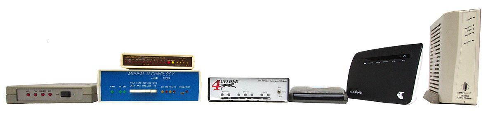

Identitas Pembuat

Nama: Muhammad Faiz Abror
NIM: 607012400127
Kelas: D3SI-48-03
Mata Kuliah: Jaringan Komputer
Pengertian Modem
Sumber:https://en.wikipedia.org/wiki/File:Australian-modems.jpg
Modem (Modulator-Demodulator) adalah perangkat keras komputer yang mengubah data dari format digital menjadi format yang cocok untuk media transmisi analog, seperti telepon atau radio. Modem bekerja dengan memodulasi sinyal pembawa untuk menyandikan data digital dan mendemodulasi sinyal yang diterima untuk mengembalikan informasi aslinya. Tujuannya adalah menghasilkan sinyal yang mudah ditransmisikan dan di-decode dengan andal. Modem dapat digunakan dengan berbagai jenis transmisi sinyal analog, mulai dari LED hingga radio.
Sejarah Modem
1. Awal Kemunculan (1950-an)
Modem, singkatan dari Modulator-Demodulator, pertama kali dikembangkan pada tahun 1950-an untuk keperluan militer. Modem memungkinkan transmisi data melalui saluran telepon. Salah satu modem pertama yang terkenal adalah Bell 101 Modem, diperkenalkan oleh AT&T Bell Labs pada tahun 1958 dengan kecepatan 110 bps.
2. Penggunaan Komersial (1960-an)
Pada tahun 1960-an, modem mulai digunakan secara komersial, terutama di perusahaan dan institusi pendidikan. Bell 103 Modem, dirilis pada tahun 1962, menjadi standar dengan kecepatan transmisi 300 bps.
3. Perkembangan di Era 1970-an
Selama tahun 1970-an, teknologi modem semakin maju, mencapai kecepatan 1200 bps dengan Bell 212 Modem. Standar ITU-T juga mulai diterapkan untuk memastikan kompatibilitas antara berbagai produsen.
4. Era Internet Awal (1980-an)
Pada tahun 1980-an, modem menjadi populer di kalangan pengguna rumah untuk mengakses bulletin board system (BBS) dan awal mula internet. Kecepatan modem meningkat menjadi 2400 bps dan kemudian 9600 bps. Hayes Smartmodem merevolusi komunikasi dengan memperkenalkan perintah AT.
5. Popularitas di Era 1990-an
Pada tahun 1990-an, modem dial-up menjadi standar untuk koneksi internet rumah, dengan kecepatan hingga 56 Kbps menggunakan standar seperti V.90 dan V.92. Periode ini menandai puncak penggunaan modem untuk konektivitas internet.
6. Era Broadband (2000-an)
Pada tahun 2000-an, teknologi broadband seperti DSL dan kabel menggantikan modem dial-up, menawarkan kecepatan yang lebih tinggi dan koneksi yang selalu aktif. Modem broadband menjadi standar untuk internet rumah.
7. Modem Modern
Saat ini, modem mendukung berbagai teknologi seperti serat optik dan jaringan 4G/5G. Banyak perangkat modern menggabungkan fungsi modem dan router untuk akses internet yang lebih mudah.
Referensi :
Perkembangan Modem Modern
Pada akhir 1990-an, kebutuhan akan kecepatan yang lebih tinggi untuk internet mendorong peralihan dari sistem berbasis suara ke encoding baru melalui kabel TV dan subcarrier telepon. Dengan munculnya ponsel dan smartphone pada 2000-an, teknologi modem berbasis radio berkembang pesat, memungkinkan kecepatan hingga ratusan megabyte per detik. Saat ini, modem menjadi perangkat yang hampir tidak terlihat, terintegrasi dalam berbagai perangkat komputasi bergerak.
Jenis-Jenis modem dan cara kerja masing-masing
1. Modem Dial-Up

Sumber: https://r.search.yahoo.com/_ylt=AwrOqVc50W5n8743cE.jzbkF;_ylu=c2VjA2ZwLWF0dHJpYgRzbGsDcnVybA--/RV=2/RE=1735344569/RO=11/RU=https%3a%2f%2fwww.usr.com%2fproducts%2f56k-dialup-modem%2f/RK=2/RS=0_UpLtu1cauCoy5cGImm17O7bWU-
Modem dial-up menggunakan jaringan telepon untuk terhubung ke internet. Modem ini bekerja dengan mengubah sinyal digital menjadi nada analog yang dapat ditransmisikan melalui saluran telepon tradisional. Modem ini populer pada awal perkembangan internet tetapi kini sudah jarang digunakan karena kecepatannya yang rendah, biasanya 56 kbps.
Cara Kerja : Menggunakan saluran telepon analog untuk menghubungkan perangkat ke internet.
Proses :
1. Mengubah sinyal digital dari komputer menjadi sinyal analog untuk dikirim melalui saluran telepon.
2. Sinyal analog diterima oleh penyedia layanan internet (ISP) dan dikonversi kembali menjadi sinyal digital.
2. Modem DSL (Digital Subscriber Line)
.jpeg)
Sumber: https://r.search.yahoo.com/_ylt=AwrOqVcJ0m5nuoA3YoCjzbkF;_ylu=c2VjA2ZwLWF0dHJpYgRzbGsDcnVybA--/RV=2/RE=1735344777/RO=11/RU=https%3a%2f%2feu.dlink.com%2fes%2fes%2fproducts%2fdsl-3788-wireless-ac1200-gigabit-vdsl-adsl-modem-router/RK=2/RS=zhW6LjZKGf.4sCe6bvEDuLHc7qY-
Modem DSL menyediakan akses internet melalui saluran telepon tetapi dengan kecepatan yang jauh lebih tinggi dibandingkan dial-up. Tidak seperti dial-up, DSL memungkinkan penggunaan internet dan layanan telepon secara bersamaan. DSL cocok untuk pengguna rumahan dan bisnis kecil.
Cara Kerja : Menggunakan saluran telepon juga, tetapi bekerja pada frekuensi yang lebih tinggi sehingga memungkinkan penggunaan internet tanpa mengganggu panggilan telepon.
Proses :
1. Membagi saluran telepon menjadi jalur suara dan data.
2. Mengubah sinyal digital dari komputer menjadi format yang dapat ditransmisikan melalui kabel telepon pada frekuensi tinggi.
3. Modem Kabel
Sumber: https://r.search.yahoo.com/_ylt=Awr99nc4725nbAQBMZGjzbkF;_ylu=c2VjA2ZwLWF0dHJpYgRzbGsDcnVybA--/RV=2/RE=1735352248/RO=11/RU=https%3a%2f%2fcarisinyal.com%2fjenis-jenis-modem%2f/RK=2/RS=XKiwN.I4pZQTfv9RVfyREOKUars-
Modem kabel menggunakan kabel koaksial yang sama dengan kabel TV untuk menyediakan akses internet. Modem ini menawarkan kecepatan yang jauh lebih tinggi dibandingkan DSL dan banyak digunakan di area perkotaan dan pinggiran kota.
Cara Kerja : Menggunakan kabel TV (coaxial) untuk menyediakan koneksi internet.
Proses :
1.Data digital dikonversi menjadi sinyal radiofrekuensi untuk ditransmisikan melalui jaringan kabel.
2.Modem di rumah Anda menerima dan mengubah sinyal tersebut kembali menjadi sinyal digital untuk komputer.
4. Modem Fiber Optik

Sumber: https://r.search.yahoo.com/_ylt=AwrO8ljb725n6qA6y3.jzbkF;_ylu=c2VjA2ZwLWF0dHJpYgRzbGsDcnVybA--/RV=2/RE=1735352411/RO=11/RU=https%3a%2f%2fshopclassla.com%2fbest-fiber-optic-modem%2f/RK=2/RS=xi718KcuYmT_jYuGPCq74moTE8Y-
Modem fiber optik mentransmisikan data menggunakan cahaya melalui kabel fiber optik. Modem ini menawarkan kecepatan yang sangat tinggi dan keandalan, sehingga ideal untuk rumah modern dan bisnis yang membutuhkan bandwidth besar.
Cara Kerja : Menggunakan serat optik untuk mentransfer data dengan sinyal cahaya.
Proses :
1.Mengonversi sinyal digital menjadi sinyal optik untuk ditransmisikan melalui kabel fiber.
2.Sinyal optik diterjemahkan kembali menjadi digital oleh perangkat di sisi pengguna.
5. Modem Nirkabel
Sumber: https://r.search.yahoo.com/_ylt=AwrO8lgx8G5nF.E62kujzbkF;_ylu=c2VjA2ZwLWF0dHJpYgRzbGsDcnVybA--/RV=2/RE=1735352497/RO=11/RU=https%3a%2f%2fid.depositphotos.com%2f52982227%2fstock-photo-wireless-internet-router.html/RK=2/RS=SUHrtHILWofduIoPPErGRbBE_h0-
Modem nirkabel terhubung ke jaringan seluler (misalnya, 4G atau 5G) untuk menyediakan akses internet. Modem ini portabel dan sering digunakan untuk internet mobile, seperti pada laptop atau hotspot mobile.
Cara Kerja : Menggunakan sinyal radio atau seluler (3G, 4G, 5G) untuk terhubung ke internet.
Proses :
1.Data digital dikirim sebagai sinyal elektromagnetik melalui jaringan seluler.
2.Modem menerima sinyal dan mengubahnya kembali menjadi data digital.
6. Modem Satelit
Sumber: https://r.search.yahoo.com/_ylt=Awr99nfJ8G5nSRkASE2jzbkF;_ylu=c2VjA2ZwLWF0dHJpYgRzbGsDcnVybA--/RV=2/RE=1735352649/RO=11/RU=https%3a%2f%2farstechnica.com%2finformation-technology%2f2021%2f11%2fstarlink-unveils-2nd-generation-satellite-dish-and-new-wi-fi-router%2f/RK=2/RS=YWJudRTVBsTHSoHonw1dLOz52RM-
Modem satelit terhubung ke internet melalui komunikasi satelit. Modem ini sering digunakan di daerah terpencil di mana layanan broadband tradisional tidak tersedia. Namun, modem ini memiliki latensi yang lebih tinggi dibandingkan jenis lainnya.
Cara Kerja : Menggunakan satelit untuk koneksi internet, biasanya untuk daerah terpencil.
Proses :
1.Sinyal digital dari komputer dikonversi menjadi sinyal radio dan dikirim ke satelit melalui antena parabola.
2.Satelit mengirimkan data ke pusat operasi, yang kemudian memproses dan mengirimkannya ke internet.
7. Modem USB

Sumber: https://r.search.yahoo.com/_ylt=AwrjZf3v8G5n9741dM.jzbkF;_ylu=c2VjA2ZwLWF0dHJpYgRzbGsDcnVybA--/RV=2/RE=1735352687/RO=11/RU=https%3a%2f%2fwww.amazon.co.uk%2fStarTech-com-External-V-92-56K-Modem%2fdp%2fB007019TV8/RK=2/RS=OYpewfTejPJajO3KdjR9OIFFfKo-
Modem USB adalah perangkat kecil yang terhubung ke port USB komputer untuk menyediakan akses internet, biasanya melalui jaringan seluler. Modem ini praktis untuk penggunaan saat bepergian.
Cara Kerja : Modem ini berbentuk perangkat kecil seperti flash drive yang terhubung ke komputer atau laptop melalui port USB dan menggunakan jaringan seluler (3G, 4G, atau 5G) untuk menyediakan akses internet.
Proses :
1. Perangkat modem USB menerima sinyal seluler dari menara BTS terdekat.
2. Sinyal tersebut diterjemahkan menjadi data digital yang dapat digunakan oleh komputer.
Tutorial
Untuk memahami lebih lanjut tentang pengaturan modem, silakan unduh tutorial di bawah ini:
Unduh Tutorial PDF